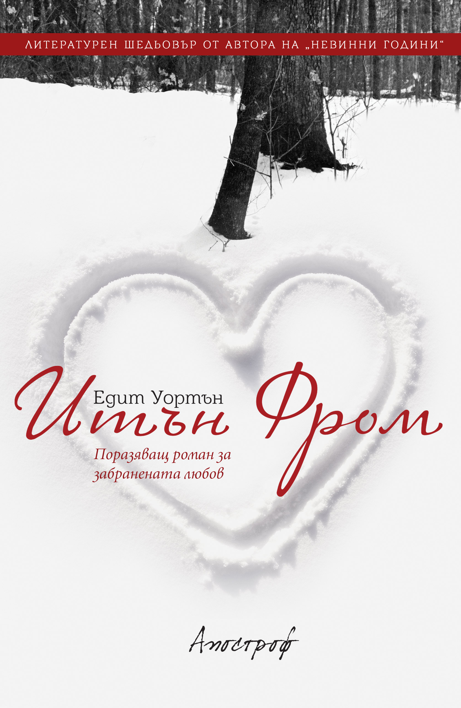

Препускайки (с шейна) из книгите, се натъкваме на първата жена в историята, спечелила престижната награда „Пулицър“
– Едит Уортън.
Героят в едноименния роман „Итън Фром“ гасне по една невъзможна любов, разкъсван от любовен триъгълник
между две тотално различни жени, едната млада, желана, а другата ревнива и студена, досущ като
ледената картина наоколо.
И така докато за един сковаващият студ навън може да е и метафора, отражение на зимата, която цари в душата му, за други
той е реално изпитание. Неочаквано преоткриване. Опасно преживяване. Борба на живот и смърт с
планински лъв, с непреодолим, нестихващ глад. Със суровата, безмилостна, величествена, но и неприветлива
земя на 3000 метра надморска височина, която бързо ограбва и последната надежда. С „Планината
помежду ни“. Която може би е единствената, която не можем да прекосим…